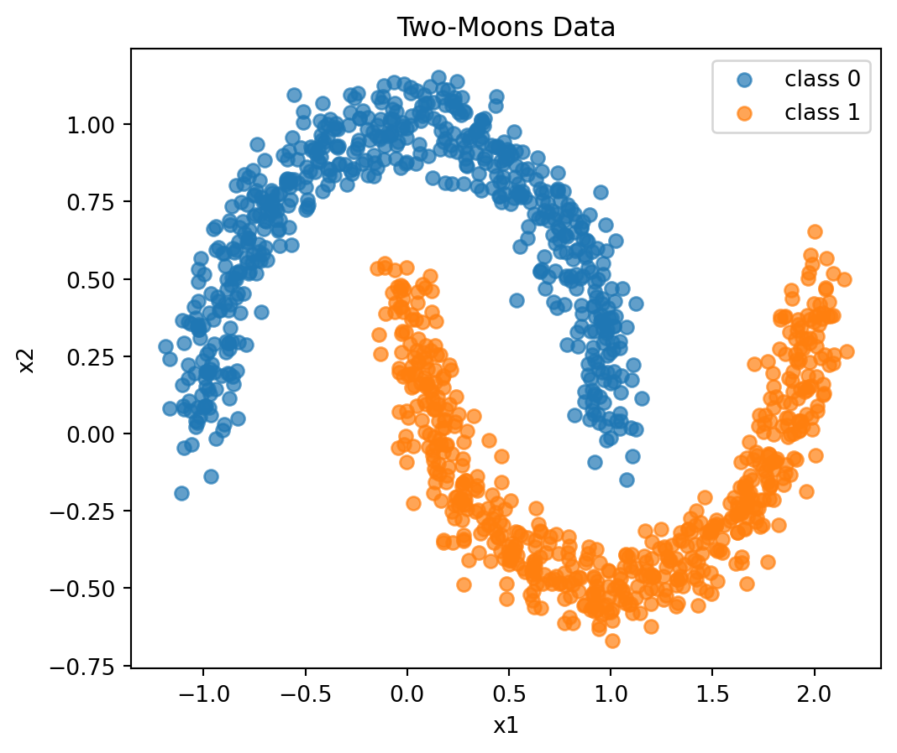
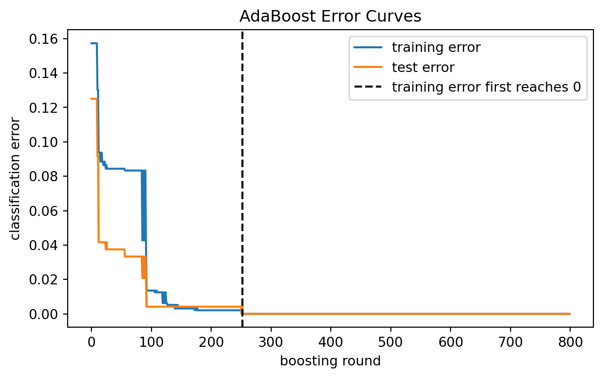
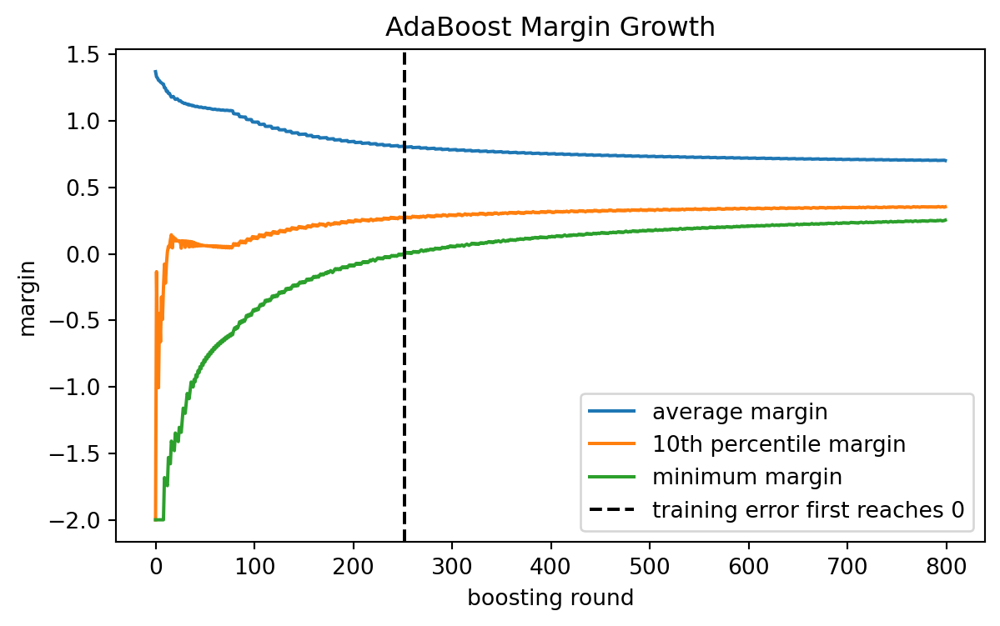
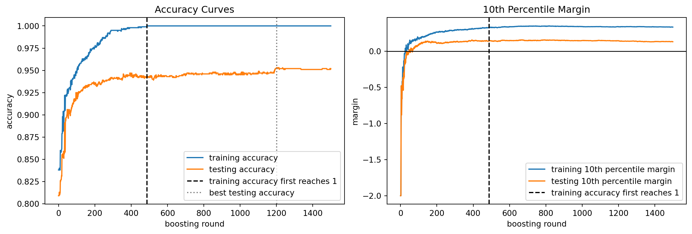
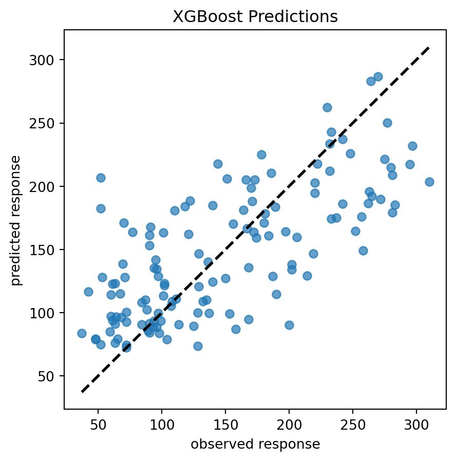
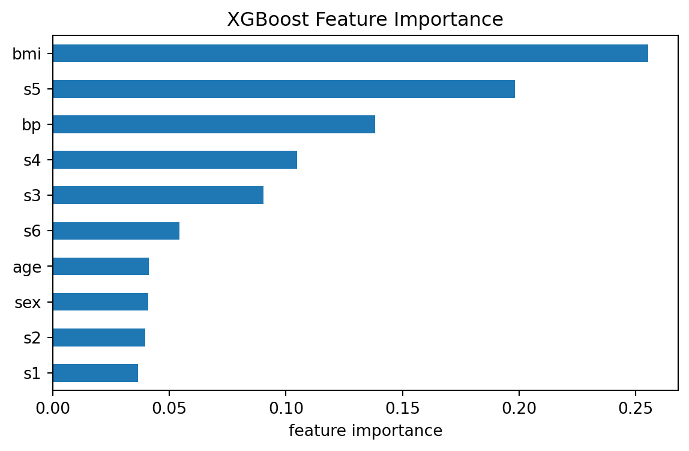

from sklearn.tree import DecisionTreeClassifier
DecisionTreeClassifier(max_depth=1)13 Boosting
\[ \require{physics} \require{braket} \]
\[ \newcommand{\dl}[1]{{\hspace{#1mu}\mathrm d}} \newcommand{\me}{{\mathrm e}} % \newcommand{\argmin}{\operatorname{argmin}} \newcommand{\rss}{\mathrm{RSS}} \newcommand{\ols}{\mathrm{OLS}} \newcommand{\ridge}{\mathrm{ridge}} \newcommand{\lasso}{\mathrm{lasso}} \newcommand{\mle}{\mathrm{MLE}} \newcommand{\constant}{\mathrm{constant}} \newcommand{\resid}{\mathrm{residual}} \newcommand{\span}{\mathrm{span}} \newcommand{\gini}{\mathrm{Gini}} \]
$$
$$
\[ \newcommand{\pdfbinom}{{\tt binom}} \newcommand{\pdfbeta}{{\tt beta}} \newcommand{\pdfpois}{{\tt poisson}} \newcommand{\pdfgamma}{{\tt gamma}} \newcommand{\pdfnormal}{{\tt norm}} \newcommand{\pdfexp}{{\tt expon}} \]
\[ \newcommand{\distbinom}{\operatorname{B}} \newcommand{\distbeta}{\operatorname{Beta}} \newcommand{\distgamma}{\operatorname{Gamma}} \newcommand{\distexp}{\operatorname{Exp}} \newcommand{\distpois}{\operatorname{Poisson}} \newcommand{\distnormal}{\operatorname{\mathcal N}} \]
Boosting is another ensemble method. Like bagging and random forests, it combines many trees into one model. The difference is how the trees are built.
Bagging and random forests build trees independently and then average them.
Boosting builds trees sequentially. Each new tree is trained to improve the current ensemble.
The central idea is:
Build many weak learners one at a time, and let each new learner focus on what the current model still gets wrong.
This chapter first discusses AdaBoost. AdaBoost is historically important and is the cleanest way to see the boosting idea. We then discuss the margin effect of AdaBoost and how to tune its hyperparameters. Finally, we discuss gradient boosting and use XGBoost as the main implementation example.
13.1 AdaBoost
AdaBoost (Adaptive Boosting) was introduced by Yoav Freund and Robert E. Schapire in 1995 [1] as one of the first highly successful boosting algorithms. Their original work showed that many weak learners, each performing only slightly better than random guessing, could be combined into a highly accurate classifier. AdaBoost became a foundational method in statistical learning, and it strongly influenced the later development of modern boosting methods such as Gradient Boosting and XGBoost.
The original AdaBoost algorithm was proposed as a classification method. Regression extensions were developed later after the success of AdaBoost classifiers. In this course, we mainly study AdaBoost classification because it introduces the core ideas of boosting in a simple and historically important setting.
For regression problems, we will move on to gradient boosting methods, which have become the dominant boosting framework in modern machine learning.
To keep the notation simple, assume the response is binary:
\[ y_i\in\{-1,+1\}. \]
AdaBoost constructs a classifier of the form
\[ F_M(x) = \sum_{m=1}^M \alpha_m G_m(x), \]
where:
- \(G_m(x)\) is the \(m\)-th weak classifier,
- \(\alpha_m\) is the weight assigned to that classifier,
- \(M\) is the number of boosting rounds.
The final prediction is
\[ \hat G(x) = \operatorname{sign}\{F_M(x)\}. \]
Thus AdaBoost is a weighted voting method. Classifiers with larger \(\alpha_m\) have more influence in the final vote.
13.1.1 Weak Learners
AdaBoost is built from weak learners.
A weak learner is a classifier that is only slightly better than random guessing. In tree-based AdaBoost, the most common weak learner is a decision stump, which is a tree with only one split.
In sklearn, a decision stump is created by
A decision stump is extremely simple and usually underfits when used alone. One of the most surprising and important ideas behind AdaBoost is that by combining many such weak learners sequentially, the resulting ensemble can become a highly accurate and powerful model.
13.1.2 Weights of observations
In AdaBoost, there are two different types of weights.
- Estimator weights (\(\alpha_m\)) determine how much influence each weak learner has in the final ensemble.
- Observation weights (\(w_i^{(m)}\)) determine which training observations receive more attention when fitting the next learner.
During training, AdaBoost repeatedly updates the weights of the training observations. Observations that are difficult to classify receive larger weights, so future learners focus more on them.
To understand this process, we need to discuss how a decision tree is trained on a weighted dataset.
The main idea is very simple. In an ordinary dataset, quantities such as class frequencies and node sample counts are computed using the number of observations. For a weighted dataset, these counts are replaced by weighted counts, that is, by the sum of the observation weights.
For example, suppose a node contains observations with weights \(w_1,w_2,\dots,w_n\). Then the effective sample size of the node becomes \(\sum_{i=1}^n w_i\). Similarly, class proportions are computed using weighted proportions rather than ordinary proportions.
Therefore, training a decision tree on weighted data is conceptually very similar to ordinary tree training. We simply replace ordinary counts by weighted counts throughout the splitting calculations.
Example 13.1 Consider the following data:
| x0 | x1 | y | Weight |
|---|---|---|---|
| 1.0 | 2.1 | + | 0.5 |
| 1.0 | 1.1 | + | 0.125 |
| 1.3 | 1.0 | - | 0.125 |
| 1.0 | 1.0 | - | 0.125 |
| 2.0 | 1.0 | + | 0.125 |
The weighted Gini impurity is
\[ \text{WeightedGini}=1-(0.5+0.125+0.125)^2-(0.125+0.125)^2=0.375. \]
13.1.3 The AdaBoost Algorithm
Suppose we have training data
\[ (x_1,y_1),\ldots,(x_n,y_n), \quad y_i\in\{-1,+1\}. \]
Initialize observation weights:
\[ w_i^{(1)}=\frac1n. \]
Then AdaBoost proceeds as follows.
- For boosting round \(m=1,\ldots,M\), fit a weak classifier \(G_m\) using the current weights.
- Compute the weighted classification error by the \(m\)-th classifier: \[ \operatorname{err}_m =\frac{\text{the total weights of misclassified observations}}{\text{the total weights}}= \frac{ \sum_{\text{misclassified}} w_i^{(m)} }{ \sum_{\text{all}} w_i^{(m)} }. \]
- Assign a weight to the weak classifier: \[ \alpha_m = \eta\cdot\log\qty(\frac{1-\operatorname{err}_m}{\operatorname{err}_m}). \]
- Update observation weights and then normalize the weights so they sum to one: \[ w^{(m+1)}_{i}\xleftarrow{\text{normalize}} \hat w_i^{(m+1)}\leftarrow\begin{cases}w^{(m)}_i\exp(-\alpha_m)&\text{if the $m$th data is correctly classified,}\\ w_i^{(m)}\exp(\alpha_m)&\text{if the $m$th data is misclassified.}\end{cases} \] that \[ w^{(m+1)}_{i}=\frac{\hat w_i^{(m+1)}}{\sum_j \hat w_j^{(m+1)}}. \] It is easy to see from the updating rule that AdaBoost puts more weight on observations that were misclassified.
- Repeat the above process until the stop conditions are met.
The final model is then \[ F_M(x) = \sum_{m=1}^M \alpha_m G_m(x), \] and the final prediction is \[ \hat G(x) = \operatorname{sign}\qty{F_M(x)}. \]
NoteLearning Rate
The \(\eta>0\) in Step 3 is the learning rate. Some textbooks include an additional factor \(\frac12\) in front of \(\eta\). This only changes the scale of the classifier weights and can therefore be absorbed into the learning rate. So we will not use the factor.
The learning rate controls how much each weak learner contributes to the final ensemble. A larger learning rate makes the model change more aggressively at each iteration, while a smaller learning rate produces more gradual updates.
In practice, smaller learning rates are often combined with a larger number of estimators.
NoteMargin
\(yF(x)\) is called the margin of the model \(F\) on the observation \((x,y)\). Since AdaBoost uses \(\operatorname{sign}\qty{F(x)}\) as the final prediction rule, the margin can be interpreted as a confidence score for the prediction.
- If the margin is positive, the prediction is correct.
- If the margin is negative, the prediction is incorrect.
- A larger positive margin indicates a more confident prediction.
- A margin close to zero indicates uncertainty.
Notice that the observation weight updating formula can be rewritten as \[ w_i^{(m+1)} = w_i^{(m)} \exp\qty(-\alpha_m y_i G_m(x_i)), \] where \(y_i G_m(x_i)\) is exactly the margin of the weak learner \(G_m\) on observation \((x_i,y_i)\).
Therefore, AdaBoost increases the weights of observations with small or negative margins and decreases the weights of observations with large positive margins. In this sense, AdaBoost can be viewed as an algorithm that attempts to improve the margin distribution by pushing margins toward larger positive values.
Margin theory is one of the central ideas in boosting and helps explain why boosting methods often continue to improve test performance even after the training error has already reached zero. We will discuss this topic in more detail later.
NoteWhy the Learner Weight Makes Sense
The classifier weight is
\[ \alpha_m = \eta\cdot\log\left( \frac{1-\operatorname{err}_m}{\operatorname{err}_m} \right). \]
- If \(\operatorname{err}_m\) is small, then the classifier is useful and \(\alpha_m\) is large.
- If \(\operatorname{err}_m\) is close to \(0.5\), then the classifier is close to random guessing and \(\alpha_m\) is close to zero.
- If \(\operatorname{err}_m>0.5\), then the classifier is worse than random guessing. In practice, this means the weak learner is not doing its job.
13.1.4 Why Does AdaBoost Work?
One of the most surprising aspects of AdaBoost is that it often works extremely well even when the base learners are very weak.
Several intuitive explanations are commonly used:
- each weak learner makes a small correction to the current model
- difficult observations receive more attention in later iterations
- many simple rules can combine into a highly flexible decision boundary
- weak learners may help reduce overfitting by forcing gradual improvements
From a practical viewpoint, AdaBoost can be viewed as repeatedly combining many simple models into a stronger ensemble.
However, understanding why AdaBoost works so well mathematically became one of the major research topics in statistical learning during the late 1990s and early 2000s. Many theoretical studies showed that AdaBoost is closely connected to several important topics, including additive modeling, exponential loss minimization, margin theory, and statistical learning theory.
One particularly influential result showed that AdaBoost can be interpreted as a stagewise additive optimization procedure. Important theoretical works include [2], [3], [4], and [5]. These studies greatly influenced the later development of modern boosting methods such as Gradient Boosting and XGBoost.
13.2 AdaBoost in Python
The basic APIs are as usual. Here we use make_moons to create a test dataset to demo the model.
from sklearn.datasets import make_moons
from sklearn.model_selection import train_test_split
X, y = make_moons(n_samples=1200, noise=0.08, random_state=2)
X_train, X_test, y_train, y_test = train_test_split(X, y, test_size=0.2, random_state=1)We use AdaBoostClassifier from sklearn.ensemble to implement AdaBoost. All the regular APIs are the same.
from sklearn.tree import DecisionTreeClassifier
from sklearn.ensemble import AdaBoostClassifier
ada = AdaBoostClassifier(
estimator=DecisionTreeClassifier(max_depth=1),
n_estimators=800,
learning_rate=0.1,
random_state=1,
)
ada.fit(X_train, y_train)
ada.score(X_test, y_test)1.0
NoteSAMME and SAMME.R
The original AdaBoost algorithm was designed for binary classification. Later extensions such as SAMME and SAMME.R generalized AdaBoost to multiclass classification problems. In sklearn, multiclass classification for AdaBoostClassifier is implemented using the SAMME algorithm by default.
However, these variants are less important in modern statistical learning practice and will not be studied in detail in this course. One reason is that these extensions substantially increase the algorithmic complexity while introducing relatively limited new conceptual ideas beyond the original AdaBoost framework. In particular, SAMME.R relies heavily on predicted class probabilities, making the method more sensitive to the quality of probability estimation and numerical stability.
More importantly, many of the key ideas behind SAMME.R already overlap with the additive optimization viewpoint used in modern gradient boosting methods. As a result, modern frameworks such as Gradient Boosting and XGBoost provide a more general, flexible, and unified approach for both regression and classification problems.
Consequently, we will focus primarily on the original AdaBoost classifier as an accessible introduction to the core ideas of boosting before moving directly to Gradient Boosting. Reflecting a similar shift in modern machine learning practice, sklearn has also deprecated SAMME.R in recent versions due to its reliance on probability estimation and its conceptual overlap with more general gradient boosting frameworks.
13.2.1 The Margin Effect of AdaBoost
AdaBoost is often explained as an algorithm that reduces training error. However, its behavior is more subtle than that.
For a binary classifier with labels \(y_i\in\{-1,+1\}\), define the margin of observation \(i\) as
\[ \operatorname{margin}_i = y_iF_M(x_i). \]
The sign of the margin determines whether the observation is classified correctly:
- if \(\operatorname{margin}_i>0\), the observation is correctly classified;
- if \(\operatorname{margin}_i<0\), the observation is misclassified.
The magnitude of the margin measures confidence. A large positive margin means the ensemble strongly supports the correct class.
13.2.2 Why Margins Matter
AdaBoost often continues to improve test performance even after the training error has reached zero. This can seem surprising. If the training error is already zero, what is left to improve?
The answer is margins.
After all training observations are classified correctly, AdaBoost may still increase the margins. Larger margins mean the classifier is more confident and more stable. This can improve generalization.
NoteMargin view
Training error only asks whether the margin is positive.
The margin view also asks how positive it is.
This is one reason AdaBoost can work well in practice. It does not only try to classify points correctly. It also tends to push correctly classified points farther away from the decision boundary.
13.2.3 Margin Plot in Python
The following example uses a clean two-moons dataset. We track training error, test error, and margins as the number of boosting rounds increases.
import numpy as np
import matplotlib.pyplot as plt
from sklearn.metrics import zero_one_loss
ada_margin = AdaBoostClassifier(
estimator=DecisionTreeClassifier(max_depth=1),
n_estimators=800,
learning_rate=0.1,
random_state=1,
)
ada_margin.fit(X_train, y_train)AdaBoostClassifier(estimator=DecisionTreeClassifier(max_depth=1),
learning_rate=0.1, n_estimators=800, random_state=1)In a Jupyter environment, please rerun this cell to show the HTML representation or trust the notebook. On GitHub, the HTML representation is unable to render, please try loading this page with nbviewer.org.
Parameters
DecisionTreeClassifier(max_depth=1)
Parameters
train_errors = []
test_errors = []
margin_mean = []
margin_10pct = []
margin_min = []
y_train_signed = 2 * y_train - 1
for pred_train, pred_test, score_train in zip(
ada_margin.staged_predict(X_train),
ada_margin.staged_predict(X_test),
ada_margin.staged_decision_function(X_train),
):
train_errors.append(zero_one_loss(y_train, pred_train))
test_errors.append(zero_one_loss(y_test, pred_test))
margins = y_train_signed * score_train
margin_mean.append(np.mean(margins))
margin_10pct.append(np.quantile(margins, 0.10))
margin_min.append(np.min(margins))
first_zero = next((i + 1 for i, e in enumerate(train_errors) if e == 0), None)
print("First round with training error 0:", first_zero)
print("Minimum test error:", np.min(test_errors))
print("Round of minimum test error:", np.argmin(test_errors) + 1)First round with training error 0: 252
Minimum test error: 0.0
Round of minimum test error: 252Plot the data.
plt.figure(figsize=(6, 5))
plt.scatter(X[y == 0, 0], X[y == 0, 1], alpha=0.7, label="class 0")
plt.scatter(X[y == 1, 0], X[y == 1, 1], alpha=0.7, label="class 1")
plt.xlabel("x1")
plt.ylabel("x2")
plt.title("Two-Moons Data")
plt.legend()
plt.show()
Plot the training and test error curves.
plt.figure(figsize=(7, 4))
plt.plot(train_errors, label="training error")
plt.plot(test_errors, label="test error")
if first_zero is not None:
plt.axvline(
first_zero,
color="black",
linestyle="--",
label="training error first reaches 0",
)
plt.xlabel("boosting round")
plt.ylabel("classification error")
plt.title("AdaBoost Error Curves")
plt.legend()
plt.show()
Now plot margin growth.
plt.figure(figsize=(7, 4))
plt.plot(margin_mean, label="average margin")
plt.plot(margin_10pct, label="10th percentile margin")
plt.plot(margin_min, label="minimum margin")
if first_zero is not None:
plt.axvline(
first_zero,
color="black",
linestyle="--",
label="training error first reaches 0",
)
plt.xlabel("boosting round")
plt.ylabel("margin")
plt.title("AdaBoost Margin Growth")
plt.legend()
plt.show()
The error plot shows whether observations are classified correctly. The margin plot shows how strongly they are classified. The 10th percentile margin is useful because it tracks difficult observations without being dominated by a single extreme point.
import numpy as np
import matplotlib.pyplot as plt
from sklearn.model_selection import train_test_split
from sklearn.tree import DecisionTreeClassifier
from sklearn.ensemble import AdaBoostClassifier
from sklearn.metrics import accuracy_score
rng = np.random.default_rng(1)
n = 2000
p = 10
X = rng.normal(size=(n, p))
# A deterministic nonlinear rule made from many weak rules
score = (
1.2 * (X[:, 0] > -0.6)
+ 1.0 * (X[:, 0] > 0.4)
- 1.1 * (X[:, 1] > 0.0)
+ 0.9 * (X[:, 2] > 0.5)
- 0.8 * (X[:, 3] > -0.2)
+ 0.7 * ((X[:, 4] > 0) & (X[:, 5] > 0))
- 0.7 * ((X[:, 6] < 0) & (X[:, 7] > 0.3))
+ 0.5 * (X[:, 8] > 0.1)
- 0.5 * (X[:, 9] > -0.4)
)
y = (score > np.median(score)).astype(int)
X_train, X_test, y_train, y_test = train_test_split(
X,
y,
test_size=0.5,
stratify=y,
random_state=101,
)
ada = AdaBoostClassifier(
estimator=DecisionTreeClassifier(max_depth=3, random_state=1),
n_estimators=1500,
learning_rate=0.05,
random_state=1,
)
ada.fit(X_train, y_train)
train_acc = []
test_acc = []
train_margin_10 = []
test_margin_10 = []
y_train_signed = 2 * y_train - 1
y_test_signed = 2 * y_test - 1
for pred_train, pred_test, score_train, score_test in zip(
ada.staged_predict(X_train),
ada.staged_predict(X_test),
ada.staged_decision_function(X_train),
ada.staged_decision_function(X_test),
):
train_acc.append(accuracy_score(y_train, pred_train))
test_acc.append(accuracy_score(y_test, pred_test))
train_margins = y_train_signed * score_train
test_margins = y_test_signed * score_test
train_margin_10.append(np.quantile(train_margins, 0.10))
test_margin_10.append(np.quantile(test_margins, 0.10))
first_full_train = next(
(i + 1 for i, s in enumerate(train_acc) if s == 1.0),
None,
)
best_test_round = np.argmax(test_acc) + 1
print("First round with training accuracy 1:", first_full_train)
print("Test accuracy at that round:", test_acc[first_full_train - 1])
print("Best test accuracy:", np.max(test_acc))
print("Best test round:", best_test_round)
print("Final training accuracy:", train_acc[-1])
print("Final test accuracy:", test_acc[-1])First round with training accuracy 1: 487
Test accuracy at that round: 0.942
Best test accuracy: 0.953
Best test round: 1201
Final training accuracy: 1.0
Final test accuracy: 0.952fig, ax = plt.subplots(1, 2, figsize=(12, 4), constrained_layout=True)
ax[0].plot(train_acc, label="training accuracy")
ax[0].plot(test_acc, label="testing accuracy")
ax[0].axvline(
first_full_train,
color="black",
linestyle="--",
label="training accuracy first reaches 1",
)
ax[0].axvline(
best_test_round,
color="gray",
linestyle=":",
label="best testing accuracy",
)
ax[0].set_xlabel("boosting round")
ax[0].set_ylabel("accuracy")
ax[0].set_title("Accuracy Curves")
ax[0].legend()
ax[1].plot(train_margin_10, label="training 10th percentile margin")
ax[1].plot(test_margin_10, label="testing 10th percentile margin")
ax[1].axvline(
first_full_train,
color="black",
linestyle="--",
label="training accuracy first reaches 1",
)
ax[1].axhline(0, color="black", linewidth=1)
ax[1].set_xlabel("boosting round")
ax[1].set_ylabel("margin")
ax[1].set_title("10th Percentile Margin")
ax[1].legend()
plt.show()
13.3 Tuning AdaBoost Hyperparameters
The most important AdaBoost hyperparameters are:
| Parameter | Role |
|---|---|
n_estimators |
Number of weak learners. |
learning_rate |
Shrinks the contribution of each learner. |
estimator__max_depth |
Complexity of the base tree. |
estimator__min_samples_leaf |
Smoothness of each base tree. |
The two most important parameters are n_estimators and learning_rate.
13.3.1 Learning Rate and Number of Trees
There is a strong tradeoff:
- smaller
learning_rateusually needs largern_estimators; - larger
learning_ratelearns faster but can overfit or become unstable; - smaller
learning_rateoften gives smoother and more stable models.
Common values are:
learning_rate = 0.01
learning_rate = 0.05
learning_rate = 0.1
learning_rate = 1.013.3.2 Base Tree Depth
Decision stumps use max_depth=1. They are common because AdaBoost was originally designed around weak learners.
Using deeper trees allows each boosting round to model interactions.
For example:
max_depth=1models main effects through stumps;max_depth=2can model simple two-variable interactions;max_depth=3can model more complex interactions.
Deeper trees are stronger learners, but they also increase the risk of overfitting.
13.3.3 Grid Search for AdaBoost
The following code tunes AdaBoost by cross-validation.
from sklearn.model_selection import GridSearchCV
from sklearn.tree import DecisionTreeClassifier
from sklearn.ensemble import AdaBoostClassifier
ada = AdaBoostClassifier(
estimator=DecisionTreeClassifier(random_state=0),
random_state=0,
)
param_grid = {
"n_estimators": [100, 300, 600],
"learning_rate": [0.01, 0.05, 0.1, 0.5],
"estimator__max_depth": [1, 2, 3],
"estimator__min_samples_leaf": [1, 5, 10],
}
grid = GridSearchCV(
ada,
param_grid=param_grid,
cv=5,
scoring="accuracy",
n_jobs=-1,
)
grid.fit(X_train, y_train)
print(grid.best_params_)
print(grid.best_score_)Tuning should be done using validation data or cross-validation. The test set should be saved for the final evaluation.
CautionNoisy data
AdaBoost can be sensitive to mislabeled observations and outliers.
Because it repeatedly increases the weights of difficult observations, noisy points may receive too much attention.
13.4 XGBoost and Gradient Boosting
The core idea of boosting is to sequentially train models in order to correct the errors made by earlier models. A natural idea is therefore:
- fit a model
- compute the residuals
- fit a new model to the residuals
- repeat
We mainly consider regression problems at the current stage.
13.4.1 Additive model
The above idea leads directly to Gradient Boosting. When the models used are trees, the model is also called Gradient Boosted Decision Trees (GBDT).
Gradient Boosting builds an additive model of the form
\[ F_M(x) = \sum_{m=1}^M \beta_m h_m(x) \]
where
- \(h_m(x)\) is usually a small regression tree
- \(\beta_m\) is a coefficient
- the model is built sequentially
Unlike bagging, where trees are trained independently, boosting trains each new tree based on the current errors of the model.
13.4.2 Regression tree fitting
In order to find the best model \(F(x)\), we would like to minimize the empirical loss function
\[ L(F)=\sum_{i=1}^n l(y_i,F(x_i)), \]
where \(\{(x_i,y_i)\}\) is the training dataset. One of the most common choices for the loss function is the squared-error loss \[ L(F) = \sum_{i=1}^n (y_i-F(x_i))^2. \]
Assume the current model is \(F_m(x)\). After adding a new tree \(f_m(x)\), the next model becomes
\[ F_{m+1}(x) = F_m(x)+f_m(x). \]
The new tree \(f_m(x)\) is chosen to reduce the loss function as much as possible.
Now consider the first-order Taylor expansion of the loss function:
\[ l(y_i,F_m(x_i)+f_m(x_i)) \approx l(y_i,F_m(x_i)) + g_i f_m(x_i), \]
where
\[ g_i = \left. \frac{\partial l(y_i,F_m(x_i))} {\partial F_m(x_i)} \right|_{F=F_m}. \]
This gives a linear approximation of the loss function in terms of the update \(f_m(x_i)\).
Since the first-order Taylor approximation is linear, the negative gradient gives the direction of steepest descent. Therefore we define the pseudo-residual
\[ r_i = -g_i = - \left. \frac{\partial l(y_i,F(x_i))} {\partial F(x_i)} \right|_{F=F_m}. \]
The pseudo-residual plays the role of the error signal that the next tree should fit.
Assume that the new tree splits the dataset into regions \(R_1,\ldots,R_s\), and for each region \(R_j\) a value \(s_j\) is assigned. We would like the tree to approximate the pseudo-residuals \(r_i\). Therefore we choose the tree to minimize
\[ \sum_{j=1}^s \sum_{x_i\in R_j} (r_i-s_j)^2. \]
For a fixed region \(R_j\), the optimal value of \(s_j\) is the mean of the observations inside that region:
\[ s_j = \frac{1}{|R_j|} \sum_{x_i\in R_j} r_i. \]
Therefore, the new tree \(f_m(x)\) is simply a regression tree (trained using RSS) with target values \(r_i\).
NotePseudo-residual
\(r_i\) is called a pseudo-residual because it is technically a negative gradient rather than an ordinary residual. However, it plays the role of the residual in Gradient Boosting.
For squared-error loss
\[ l(y,F(x)) = (y-F(x))^2, \]
we have
\[ r_i = 2(y_i-F_m(x_i)), \]
which is proportional to the ordinary residual.
Therefore, under \(L^2\) loss, Gradient Boosting can literally be interpreted as fitting residuals.
13.4.3 XGBoost: Initial idea
XGBoost stands for Extreme Gradient Boosting. Its mathematical foundation can be viewed as a modified and improved version of GBDT.
XGBoost became one of the most successful shallow machine learning models in modern practice. In addition to its mathematical improvements, it also introduced many engineering innovations that significantly improved efficiency and scalability. After the success of XGBoost, several related models such as LightGBM and CatBoost were also developed and became widely used.
We mainly focus on the mathematical ideas behind XGBoost. The motivation is very similar to GBDT. We consider the additive model
\[ F_{m+1}(x) = F_m(x)+f_m(x), \]
and would like to minimize the empirical loss
\[ L(F) = \sum_{i=1}^n l(y_i,F(x_i)). \]
Assume the current model is \(F_m(x)\). After adding a new tree \(f_m(x)\), we obtain
\[ F_{m+1}(x) = F_m(x)+f_m(x). \]
Instead of using only first-order information as in GBDT, XGBoost uses a second-order Taylor expansion of the loss function:
\[ l(y_i,F_m(x_i)+f_m(x_i)) \approx l(y_i,F_m(x_i)) + g_i f_m(x_i) + \frac12 h_i f_m(x_i)^2, \]
where
\[ g_i = \left. \frac{\partial l(y_i,F(x_i))} {\partial F(x_i)} \right|_{F=F_m}, \]
and
\[ h_i = \left. \frac{\partial^2 l(y_i,F(x_i))} {\partial F(x_i)^2} \right|_{F=F_m}. \]
Here
- \(g_i\) measures the gradient
- \(h_i\) measures the curvature of the loss function
Thus, XGBoost uses both gradient and curvature information.
13.4.4 Intuition of the quadratic approximation
The first-order Taylor expansion used in GBDT gives only a linear approximation of the loss function. In contrast, the second-order Taylor expansion gives a quadratic approximation:
\[ g_i f+\frac12 h_i f^2. \]
As a function of \(f\), its derivative is
\[ g_i+h_i f. \]
Setting this equal to zero gives the critical point
\[ f = -\frac{g_i}{h_i}. \]
This can be viewed as the approximately optimal update suggested by the local quadratic approximation of the loss function.
13.4.5 Tree structure in XGBoost
Assume that the new tree splits the dataset into regions
\[ R_1,\ldots,R_s, \]
and assigns a prediction value \(s_j\) to region \(R_j\). Then for every observation inside region \(R_j\), we have
\[ f_m(x_i)=s_j. \]
Substituting this into the quadratic approximation gives the approximate objective
\[ \sum_{j=1}^s \sum_{x_i\in R_j} \left( g_i s_j + \frac12 h_i s_j^2 \right). \]
For a fixed tree structure, we minimize this expression with respect to \(s_j\).
Differentiating with respect to \(s_j\) gives
\[ \sum_{x_i\in R_j} (g_i+h_i s_j) = 0. \]
Therefore,
\[ s_j = - \frac{ \sum_{x_i\in R_j} g_i }{ \sum_{x_i\in R_j} h_i }. \]
If we define
\[ G_j = \sum_{x_i\in R_j} g_i, \quad H_j = \sum_{x_i\in R_j} h_i, \]
then the optimal leaf value becomes
\[ s_j = -\frac{G_j}{H_j}. \]
WarningImportant difference from ordinary CART
This tree is NOT an ordinary CART regression tree trained with RSS.
- In GBDT, we explicitly train a CART regression tree to fit the pseudo-residuals.
- In XGBoost, the leaf values are derived directly from the quadratic approximation of the objective function itself.
Therefore, although XGBoost trees may look structurally similar to CART trees, mathematically they are solving a different optimization problem.
13.4.6 Regularization
So far we derived the basic XGBoost objective using the second-order Taylor approximation.
However, minimizing only the training loss may produce overly complex trees and lead to overfitting. Therefore XGBoost introduces an explicit regularization term to control tree complexity.
Suppose the new tree \(f_m(x)\) has
- \(T\) leaves
- leaf values \(s_1,\ldots,s_T\)
XGBoost defines the regularization term
\[ \Omega(f_m) = \gamma T + \frac12 \lambda \sum_{j=1}^T s_j^2. \]
Therefore the objective becomes
\[ L(F_m+f_m) + \Omega(f_m). \]
Here
- \(\gamma T\) penalizes the number of leaves
- \(\frac12 \lambda \sum s_j^2\) penalizes large leaf values
Using the second-order Taylor approximation and grouping terms by regions gives
\[ \sum_{j=1}^T \left[ G_j s_j + \frac12 (H_j+\lambda)s_j^2 \right] + \gamma T. \]
For a fixed tree structure, we minimize the objective with respect to \(s_j\). Differentiating gives
\[ G_j+(H_j+\lambda)s_j=0. \]
Therefore the optimal leaf value becomes
\[ s_j = - \frac{G_j}{H_j+\lambda}. \]
Compared with the non-regularized version
\[ s_j = -\frac{G_j}{H_j}, \]
the regularization term enlarges the denominator and shrinks the leaf predictions toward zero. This effect is similar to ridge regularization in linear regression.
Substituting the optimal leaf values back into the objective gives
\[ -\frac12 \sum_{j=1}^T \frac{G_j^2}{H_j+\lambda} + \gamma T. \]
This quantity is used by XGBoost to evaluate the quality of tree splits.
Therefore, unlike ordinary CART trees which use RSS or Gini impurity, XGBoost derives its splitting criterion directly from the regularized optimization objective.
13.4.7 Learning rate
In practice, although XGBoost computes the best update tree \(f_m\), it usually does not add the full tree update directly to the model. Instead, the update is scaled by a learning rate (also called the shrinkage parameter):
\[ F_{m+1}(x) = F_m(x) + \eta f_m(x), \]
where
\[ 0<\eta\le 1. \]
Thus every new tree contributes only partially to the final model.
Equivalently, after computing the optimal leaf value
\[ s_j = - \frac{G_j}{H_j+\lambda}, \]
XGBoost actually uses the scaled leaf prediction
\[ \eta s_j. \]
Therefore shrinkage reduces the influence of each individual tree.
The parameter \(\eta\) is called the learning rate or shrinkage parameter.
NoteXGBoost in practice
The mathematical foundation of XGBoost is built on three main ideas:
- second-order Taylor approximation of the loss function
- explicit regularization on tree complexity
- shrinkage through the learning rate
In addition to these mathematical ideas, XGBoost also introduced many important engineering optimizations such as:
- parallel tree construction
- efficient handling of sparse data
- cache-aware memory access
- approximate split finding algorithms
These engineering improvements are one of the main reasons why XGBoost became highly successful in practical machine learning applications.
13.4.8 GBDT and XGBoost for classification
Both GBDT and XGBoost can naturally be extended from regression to classification problems. The overall framework remains the same:
- additive tree model
- boosting optimization
- sequentially adding trees
- minimizing a loss function
The main difference is the choice of the loss function.
For binary classification, boosting methods commonly use logistic loss
\[ l(y,p) = - \left[ y\log p+(1-y)\log(1-p) \right]. \]
The model output \(F(x)\) is converted into probabilities using the logistic function \[ p(x) = \frac1{1+e^{-F(x)}}. \] For multiclass classification, softmax-based loss functions are commonly used.
The difference between GBDT and XGBoost remains the same as in regression:
- GBDT uses first-order gradients (pseudo-residuals)
- XGBoost uses second-order Taylor approximation together with regularization
Thus both methods provide a unified framework for regression and classification problems.
NoteAdaBoost as Gradient Boosting with exponential loss
AdaBoost can be interpreted as a special case of Gradient Boosting using the exponential loss function
\[ l(y,F(x)) = e^{-yF(x)}, \]
where
\[ y\in\{-1,1\}. \]
The empirical loss becomes
\[ L(F) = \sum_{i=1}^n e^{-y_iF(x_i)}. \]
This loss heavily penalizes observations with negative margins
\[ y_iF(x_i). \]
In particular:
- correctly classified points with large positive margins receive very small loss
- misclassified points receive exponentially large loss
Therefore minimizing exponential loss naturally increases the weights of difficult observations, which explains the adaptive reweighting behavior of AdaBoost.
Taking derivative gives
\[ \frac{\partial l(y_i,F(x_i))} {\partial F(x_i)} = -y_i e^{-y_iF(x_i)}. \]
Thus the pseudo-residual becomes
\[ r_i = y_i e^{-y_iF(x_i)}. \]
Observations with small or negative margins receive much larger pseudo-residuals and therefore larger influence in the next boosting step.
From this viewpoint, AdaBoost can be interpreted as functional gradient descent under exponential loss.
Gradient Boosting generalizes this idea by allowing arbitrary differentiable loss functions rather than only exponential loss.
13.5 XGBoost in Python
XGBoost is implemented using the library XGBoost. You may go to the offical website for more information. We will cover the basic usage in this lecture.
A typical XGBoost regression model looks like this.
from xgboost import XGBRegressor
xgb = XGBRegressor(
objective="reg:squarederror",
n_estimators=500,
learning_rate=0.05,
max_depth=3,
subsample=0.8,
colsample_bytree=0.8,
reg_lambda=1.0,
random_state=0,
n_jobs=-1,
)
xgb.fit(X_train, y_train)The most important hyperparameters are:
| Parameter | Meaning |
|---|---|
n_estimators |
Number of boosting rounds. |
learning_rate |
Learning rate. |
max_depth |
Depth of each tree. |
subsample |
Fraction of observations used for each tree. |
colsample_bytree |
Fraction of predictors used for each tree. |
reg_lambda |
L2 regularization on leaf weights. |
reg_alpha |
L1 regularization on leaf weights. |
Most of them are straightforward. I only discuss these since they are not from the theory.
Note
subsample
subsample controls the fraction of training observations randomly sampled for each boosting round. For example subsample=0.8 means that each new tree is trained using only 80% of the observations.
This introduces additional randomness into boosting, similar to bagging in Random Forests. Smaller values of subsample and reduce variance and improve generalization. However, if the value is too small, the model may underfit.
Note
colsample_bytree
colsample_bytree controls the fraction of predictors randomly sampled for each tree. For example colsample_bytree=0.7 means that each tree only considers 70% of the predictors.
This idea is similar to feature subsampling in Random Forests. It reduces correlation between trees and can improve robustness and generalization performance.
Note
reg_alpha
reg_alpha is the L1 regularization parameter on leaf weights. Previously we introduced the L2 regularization term \(\frac12\lambda\sum s_j^2\), which corresponds to ridge-style regularization.
XGBoost can also include an L1 penalty \[
\alpha\sum\abs{s_j},
\] which is controlled by reg_alpha. L1 regularization tends to shrink some leaf values exactly to zero, producing sparser models and sometimes improving interpretability and robustness. This corresponds to lasso-style regularization.
We don’t introduce L1 regularization in the first place because it might make the math formula too complicated.
13.5.1 Tuning XGBoost
The hyperparameters work together.
A common strategy is:
- Start with shallow trees, such as
max_depth=2ormax_depth=3. - Use a small learning rate, such as
0.03or0.05. - Use enough trees to let the model learn.
- Add subsampling to reduce overfitting.
- Tune regularization if the model still overfits.
Example grid:
from sklearn.model_selection import GridSearchCV
from xgboost import XGBRegressor
xgb = XGBRegressor(
objective="reg:squarederror",
random_state=0,
n_jobs=-1,
)
param_grid = {
"n_estimators": [200, 500, 800],
"learning_rate": [0.03, 0.05, 0.1],
"max_depth": [2, 3, 4],
"subsample": [0.7, 0.9, 1.0],
"colsample_bytree": [0.7, 0.9, 1.0],
"reg_lambda": [1.0, 5.0, 10.0],
}
grid = GridSearchCV(
xgb,
param_grid=param_grid,
cv=5,
scoring="neg_mean_squared_error",
n_jobs=-1,
)
grid.fit(X_train, y_train)For large grids, RandomizedSearchCV is usually more efficient than a full grid search.
13.5.2 Early Stopping
Boosting can overfit if too many trees are added. Early stopping monitors validation performance and stops when the validation score no longer improves.
Conceptually:
- Split the training data into a training part and a validation part.
- Fit trees sequentially.
- Track validation error after each round.
- Stop when validation error stops improving.
In XGBoost, early stopping is often used through an evaluation set.
xgb.fit(
X_train,
y_train,
eval_set=[(X_valid, y_valid)],
verbose=False,
)Exact early-stopping syntax can differ across XGBoost versions, so it is useful to check the installed version when writing production code.
13.6 Example 1: AdaBoost on a Nonlinear Classification Problem
We first use a synthetic nonlinear classification problem. This example shows that many weak learners can create a flexible decision boundary.
import numpy as np
import matplotlib.pyplot as plt
from sklearn.datasets import make_moons
from sklearn.model_selection import train_test_split, GridSearchCV
from sklearn.tree import DecisionTreeClassifier
from sklearn.ensemble import AdaBoostClassifier
from sklearn.metrics import accuracy_score
X, y = make_moons(n_samples=1500, noise=0.25, random_state=10)
X_train, X_test, y_train, y_test = train_test_split(
X,
y,
test_size=0.3,
stratify=y,
random_state=10,
)Fit a baseline stump and an AdaBoost model.
stump = DecisionTreeClassifier(max_depth=1, random_state=10)
ada = AdaBoostClassifier(
estimator=DecisionTreeClassifier(max_depth=1, random_state=10),
n_estimators=300,
learning_rate=0.05,
random_state=10,
)
stump.fit(X_train, y_train)
ada.fit(X_train, y_train)
print("Stump accuracy:", accuracy_score(y_test, stump.predict(X_test)))
print("AdaBoost accuracy:", accuracy_score(y_test, ada.predict(X_test)))Stump accuracy: 0.7888888888888889
AdaBoost accuracy: 0.8555555555555555Now tune the AdaBoost model.
ada_base = AdaBoostClassifier(
estimator=DecisionTreeClassifier(random_state=10),
random_state=10,
)
param_grid = {
"n_estimators": [100, 300, 600],
"learning_rate": [0.03, 0.05, 0.1],
"estimator__max_depth": [1, 2],
"estimator__min_samples_leaf": [1, 5],
}
grid = GridSearchCV(
ada_base,
param_grid=param_grid,
cv=5,
scoring="accuracy",
n_jobs=-1,
)
grid.fit(X_train, y_train)
best_ada = grid.best_estimator_
print("Best parameters:", grid.best_params_)
print("Best CV accuracy:", grid.best_score_)
print("Test accuracy:", accuracy_score(y_test, best_ada.predict(X_test)))Best parameters: {'estimator__max_depth': 2, 'estimator__min_samples_leaf': 5, 'learning_rate': 0.1, 'n_estimators': 600}
Best CV accuracy: 0.9266666666666665
Test accuracy: 0.9177777777777778Plot the decision boundary.
def plot_decision_boundary(model, X, y, title):
x0_min, x0_max = X[:, 0].min() - 0.5, X[:, 0].max() + 0.5
x1_min, x1_max = X[:, 1].min() - 0.5, X[:, 1].max() + 0.5
xx0, xx1 = np.meshgrid(
np.linspace(x0_min, x0_max, 300),
np.linspace(x1_min, x1_max, 300),
)
grid_points = np.c_[xx0.ravel(), xx1.ravel()]
zz = model.predict(grid_points).reshape(xx0.shape)
plt.figure(figsize=(6, 5))
plt.contourf(xx0, xx1, zz, alpha=0.25)
plt.scatter(X[:, 0], X[:, 1], c=y, s=15, alpha=0.7)
plt.xlabel("x1")
plt.ylabel("x2")
plt.title(title)
plt.show()
plot_decision_boundary(best_ada, X_test, y_test, "AdaBoost Decision Boundary")
The boundary is built from many simple stumps or shallow trees. Each individual tree is weak, but the weighted ensemble can create a nonlinear classifier.
13.7 Example 2: XGBoost on the Diabetes Data
We now use the diabetes regression dataset from sklearn. The response is a quantitative measure of disease progression one year after baseline.
This example uses XGBoost if it is installed. If XGBoost is not installed, the code prints a message instead of failing the whole document.
import numpy as np
import pandas as pd
import matplotlib.pyplot as plt
from sklearn.datasets import load_diabetes
from sklearn.model_selection import train_test_split, GridSearchCV
from sklearn.metrics import mean_squared_error, r2_score
from sklearn.ensemble import RandomForestRegressor, GradientBoostingRegressor
diabetes = load_diabetes(as_frame=True)
X = diabetes.data
y = diabetes.target
X_train, X_test, y_train, y_test = train_test_split(
X,
y,
test_size=0.3,
random_state=42,
)Fit a random forest, a sklearn gradient boosting model, and XGBoost.
try:
from xgboost import XGBRegressor
has_xgboost = True
except ImportError:
XGBRegressor = None
has_xgboost = False
models = {
"Random forest": RandomForestRegressor(
n_estimators=500,
max_features="sqrt",
random_state=42,
n_jobs=-1,
),
"Gradient boosting": GradientBoostingRegressor(
n_estimators=300,
learning_rate=0.05,
max_depth=2,
random_state=42,
),
}
if has_xgboost:
models["XGBoost"] = XGBRegressor(
objective="reg:squarederror",
n_estimators=300,
learning_rate=0.05,
max_depth=2,
subsample=0.8,
colsample_bytree=0.8,
reg_lambda=1.0,
random_state=42,
n_jobs=-1,
)
else:
print("xgboost is not installed, so the XGBoost model is skipped.")
results = []
for name, model in models.items():
model.fit(X_train, y_train)
pred = model.predict(X_test)
results.append(
{
"model": name,
"test_rmse": np.sqrt(mean_squared_error(y_test, pred)),
"test_r2": r2_score(y_test, pred),
}
)
pd.DataFrame(results)| model | test_rmse | test_r2 | |
|---|---|---|---|
| 0 | Random forest | 52.648723 | 0.486526 |
| 1 | Gradient boosting | 53.671369 | 0.466385 |
| 2 | XGBoost | 53.282261 | 0.474095 |
The random forest is an averaging method. Gradient boosting and XGBoost are sequential correction methods. Which one performs best depends on the dataset and tuning.
13.7.1 Tuning XGBoost
Now tune XGBoost by cross-validation. This chunk is skipped automatically if XGBoost is not installed.
if has_xgboost:
xgb_base = XGBRegressor(
objective="reg:squarederror",
random_state=42,
n_jobs=-1,
)
param_grid = {
"n_estimators": [100, 300, 600],
"learning_rate": [0.03, 0.05, 0.1],
"max_depth": [1, 2, 3],
"subsample": [0.7, 0.9, 1.0],
"colsample_bytree": [0.7, 0.9, 1.0],
"reg_lambda": [1.0, 5.0],
}
xgb_grid = GridSearchCV(
xgb_base,
param_grid=param_grid,
cv=5,
scoring="neg_mean_squared_error",
n_jobs=-1,
)
xgb_grid.fit(X_train, y_train)
best_xgb = xgb_grid.best_estimator_
xgb_pred = best_xgb.predict(X_test)
print("Best parameters:")
print(xgb_grid.best_params_)
print("Best CV RMSE:", np.sqrt(-xgb_grid.best_score_))
print("Test RMSE:", np.sqrt(mean_squared_error(y_test, xgb_pred)))
print("Test R^2:", r2_score(y_test, xgb_pred))
else:
best_xgb = None
xgb_pred = NoneBest parameters:
{'colsample_bytree': 0.9, 'learning_rate': 0.03, 'max_depth': 1, 'n_estimators': 300, 'reg_lambda': 5.0, 'subsample': 0.7}
Best CV RMSE: 57.92481233167317
Test RMSE: 51.37420881321203
Test R^2: 0.5110857980684191The tuning grid focuses on the most important parameters:
n_estimatorsandlearning_ratecontrol how long and how aggressively the model learns;max_depthcontrols interaction complexity;subsampleandcolsample_bytreeadd randomness and reduce overfitting;reg_lambdaregularizes leaf weights.
13.7.2 Predicted versus Observed Values
if best_xgb is not None:
plt.figure(figsize=(5, 5))
plt.scatter(y_test, xgb_pred, alpha=0.7)
lims = [
min(y_test.min(), xgb_pred.min()),
max(y_test.max(), xgb_pred.max()),
]
plt.plot(lims, lims, "k--", linewidth=2)
plt.xlabel("observed response")
plt.ylabel("predicted response")
plt.title("XGBoost Predictions")
plt.show()
Points near the diagonal are predicted accurately. Points far from the diagonal are observations where the model has larger error.
13.7.3 Residual Plot
if best_xgb is not None:
residuals = y_test - xgb_pred
plt.figure(figsize=(7, 4))
plt.scatter(xgb_pred, residuals, alpha=0.7)
plt.axhline(0, color="black", linestyle="--")
plt.xlabel("predicted response")
plt.ylabel("residual")
plt.title("XGBoost Residual Plot")
plt.show()
Residuals should be roughly centered around zero. A strong pattern may indicate missing structure or systematic bias.
13.7.4 Feature Importance
XGBoost provides impurity-like feature importance through .feature_importances_.
if best_xgb is not None:
importance = pd.Series(
best_xgb.feature_importances_,
index=X.columns,
).sort_values(ascending=True)
plt.figure(figsize=(7, 4))
importance.plot(kind="barh")
plt.xlabel("feature importance")
plt.title("XGBoost Feature Importance")
plt.show()
Feature importance describes how much the fitted model uses each predictor for prediction. It should not be interpreted as a causal effect.
13.7.5 Learning Curve
Finally, we can see how test error changes as the number of boosting rounds increases. For a fixed learning rate and tree depth, adding more trees usually improves the model at first. After some point, the test error may stop improving or begin to increase.
if has_xgboost:
tree_counts = [25, 50, 100, 200, 400, 800]
train_rmse = []
test_rmse = []
for n_trees in tree_counts:
model = XGBRegressor(
objective="reg:squarederror",
n_estimators=n_trees,
learning_rate=0.05,
max_depth=2,
subsample=0.8,
colsample_bytree=0.8,
reg_lambda=1.0,
random_state=42,
n_jobs=-1,
)
model.fit(X_train, y_train)
train_pred = model.predict(X_train)
test_pred = model.predict(X_test)
train_rmse.append(np.sqrt(mean_squared_error(y_train, train_pred)))
test_rmse.append(np.sqrt(mean_squared_error(y_test, test_pred)))
plt.figure(figsize=(7, 4))
plt.plot(tree_counts, train_rmse, marker="o", label="training RMSE")
plt.plot(tree_counts, test_rmse, marker="o", label="test RMSE")
plt.xscale("log")
plt.xlabel("number of trees")
plt.ylabel("RMSE")
plt.title("XGBoost Learning Curve")
plt.legend()
plt.show()
This plot is useful for deciding whether more trees are helpful. If training error keeps decreasing but test error does not, the model may be overfitting.
13.8 Summary
AdaBoost:
- builds weak learners sequentially,
- increases weights on misclassified observations,
- combines weak learners by weighted voting,
- can be understood through margins,
- is sensitive to noisy labels and outliers.
Gradient boosting:
- fits each new tree to residuals or negative gradients,
- works with many loss functions,
- usually uses shallow trees,
- relies heavily on learning rate, number of trees, and tree depth.
XGBoost:
- is a regularized and optimized gradient boosting implementation,
- adds row and column subsampling,
- includes regularization for tree complexity and leaf weights,
- is often very strong on tabular data,
- requires careful tuning.
The key distinction from bagging and random forests is that boosting is sequential. Each new tree depends on the current model and is trained to improve what remains unexplained.